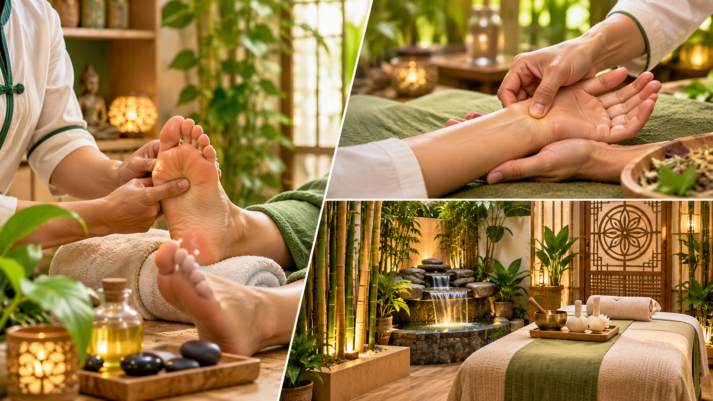

Pressure-based
Classical acupressure
A traditional practice using finger or hand pressure on selected points. Ask about pressure level, session structure and areas to avoid.
Explore what selected complementary practices involve, what to ask before a session and where evidence or safety considerations matter.
Ask about a session

Availability, practitioner training and suitability must be confirmed directly with the centre.
A traditional practice using finger or hand pressure on selected points. Ask about pressure level, session structure and areas to avoid.
A complementary practice involving pressure on areas of the feet. It should not be presented as a way to diagnose or treat internal disease.
A hand-and-foot correspondence system from a traditional practice. Explanations should distinguish tradition from established medical evidence.
Cupping uses suction cups on the skin. Wet cupping involves skin puncture and carries additional infection and bleeding risks.
A traditional heat-based practice using warming materials. Discuss burn, smoke and other safety considerations before considering it.
Traditional approaches involving selected points on the outer ear. Ask about hygiene, materials and suitability.
Ask about practitioner qualifications, expected sensations, hygiene, possible side effects, fees, duration and whether your health circumstances make a practice unsuitable.
Meet the practitionersTell the practitioner about pregnancy, bleeding disorders, skin conditions, implanted devices, medications, recent injuries or other relevant health circumstances. Seek medical advice when uncertain. Do not delay or replace prescribed care.